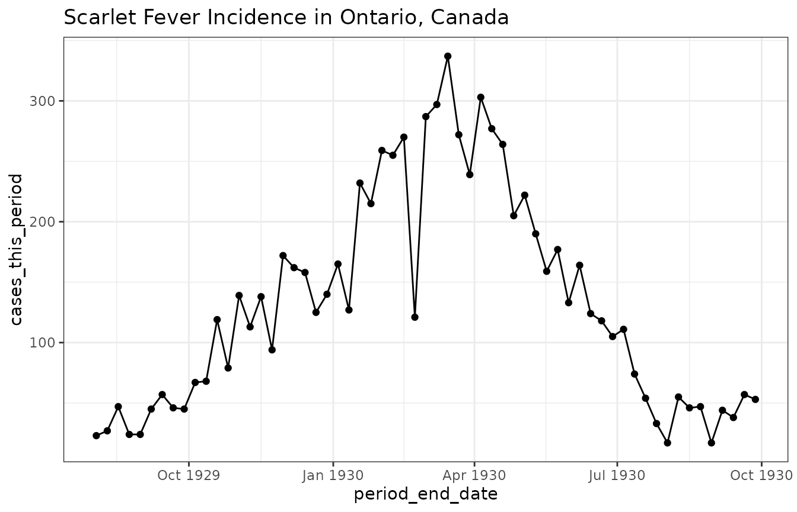

In this vignette we illustrate how to obtain data from the API using scarlet fever data in Ontario as an example.
_(52602981880).jpg)
(Image From: https://www.flickr.com/photos/niaid/52602981880/)
Preliminaries
We use the following packages for this illustration.
We also turn off messages from the API that are not helpful when presenting this material.
options(iidda_api_msgs = FALSE)Scarlet Fever Data in Ontario
Data from the canmod
digitization project provides communicable disease incidence data
for all notifiable infectious diseases, including scarlet fever. The
name of the main dataset from that project is
canmod-cdi-normalized, which we can get and filter using
the following ?featured_data command.
scarlet_fever_ontario = featured_data(
dataset_id = "canmod-cdi-normalized"
, iso_3166 = "CA"
, iso_3166_2 = "CA-ON"
, time_scale = "wk"
, basal_disease = "scarlet-fever"
, period_end_date = "1929-08-01..1930-10-01"
)
print(scarlet_fever_ontario)
#> # A tibble: 61 × 21
#> iso_3166 iso_3166_2 period_start_date period_end_date disease nesting_disease
#> <chr> <chr> <date> <date> <chr> <chr>
#> 1 CA CA-ON 1929-07-28 1929-08-03 scarle… ""
#> 2 CA CA-ON 1929-08-04 1929-08-10 scarle… ""
#> 3 CA CA-ON 1929-08-11 1929-08-17 scarle… ""
#> 4 CA CA-ON 1929-08-18 1929-08-24 scarle… ""
#> 5 CA CA-ON 1929-08-25 1929-08-31 scarle… ""
#> 6 CA CA-ON 1929-09-01 1929-09-07 scarle… ""
#> 7 CA CA-ON 1929-09-08 1929-09-14 scarle… ""
#> 8 CA CA-ON 1929-09-15 1929-09-21 scarle… ""
#> 9 CA CA-ON 1929-09-22 1929-09-28 scarle… ""
#> 10 CA CA-ON 1929-09-29 1929-10-05 scarle… ""
#> # ℹ 51 more rows
#> # ℹ 15 more variables: basal_disease <chr>, cases_this_period <dbl>,
#> # location <chr>, location_type <chr>, time_scale <chr>,
#> # historical_disease <chr>, historical_disease_family <chr>,
#> # historical_disease_subclass <chr>, days_this_period <dbl>,
#> # period_mid_date <date>, population <dbl>, record_origin <chr>,
#> # original_dataset_id <chr>, digitization_id <chr>, scan_id <chr>
(scarlet_fever_ontario
|> ggplot(aes(period_end_date, cases_this_period))
+ geom_line() + geom_point()
+ ggtitle("Scarlet Fever Incidence in Ontario, Canada")
+ theme_bw()
)